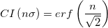

Letztes Update: 04.02.2015
Ein häufig verwendeter Parameter beim Durchführen von Messungen ist das Konfidenzintervall (KI). Es handelt sich hierbei um die Wahrscheinlichkeit, dass eine Messung in ein bestimmtes geschlossenes Intervall [a,b] fällt. Das wichtige Intervall für die symmetrische Gaussian-Verteilung ist die Standardabweichung bzw. σ. Die mit den Intervallen 1σ, 2σ, 3σ bzw. nσ verbundenen Wahrscheinlichkeiten werden in Origin einfach mit Hilfe der Fehlerfunktion erf berechnet. Daher:

Die wiederholte Auswertung der Funktion erf erzeugt die folgenden hilfreichen Werte und Tabelle.
| N | KI |
|---|---|
| 1 | 0,6826894850 |
| 2 | 0,9544997241 |
| 3 | 0,9973002038 |
| 4 | 0,9999366575 |
| 5 | 0,9999994267 |
| 6 | 0,9999999980 |
Schlüsselwörter:Gaussian, Konfidenzband